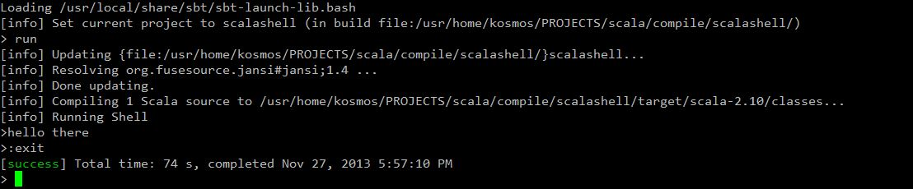

An Empty Shell Project
Tags:I’ve been playing around a little with writing a shell in scala, just to see what kinds of issues I’d come across. I remember writing most of a pipeline shell in college using C++, and it was kind of fun because it involved IO and interprocess communication: the “useful” aspects of programming as opposed to the “safe” ones.
So I did a bit of looking into what scala offered for IO and console development. There are many options, not all are easy to use or understand, since the API documentation is distinctly lacking clear examples. There is the Console class, the Source class, Streams, and Java libraries as potential entities that can be used to handle console input and output. It’s pretty confusing, and hard to tell which ones are heading for deprection and which ones are “the right ones” to use.
I decided I would go with Source as the class to leverage, because it is common generic means to read and write file streams in most examples I’ve seen. This should work just as easily for console IO. I also decided to use a line-by-line approach to shell interaction, rather than a character-by-character based scheme which is too granular for the purpose. After all, a shell bases its IO on complete lines of input.
Originally, each line of code I used was developed in REPL (the acronym in common use to describe the scala development shell) a place you can execute scala commands to investigate how they behave). It’s accessible simply by entering
> scala
at a non-root command prompt.
When I settled on some lines of code that worked, I moved them into a scala script. A scala script is not compiled, but interpreted scala that can run prototypes of code you write without having to setup a project development enviroment. Doing this after playing with little solutions in REPL allows you to see how everything works together.
So for an intermediate scala script, I came up with the following, (named scalashell.script) which simply creates empty shell behavior and has a way of exiting cleanly, in addition to a couple of junk commands to capture any other input.
1 2 3 4 5 6 7 8 9 10 11 12 13 14 15 | import scala.io.Source val prompt = '>' System.out.print(prompt) for (line <- Source.stdin.getLines.takeWhile(_ != ":exit") ) { System.out.print(prompt) val wordgroups = line.split(" ").toList if (wordgroups.contains("someword")) System.out.print("someword found") } |
It can be run with
> scala scalashell.script
from a non-root prompt.
The script is an intermediate point of development, with the ultimate goal of making a compilable project. Now, since I have a bit of working code for something (admittedly not much at the moment) it seems right to setup the project more formally. Since I want to encorporate testing in this project, and some modern build tools, I decided to use Scalatest for testing and SBT for builds. This is a fairly common setup.
Scalatest is a versatile test framework that can do a variety of styles of testing: BDD (Behavior Driven Development), simple unit testing, integration testing. It has several different styles of expression for tests. FunSuite, FlatSpec, FunSpec, WordSpec, FreeSpec, Spec, PropSpec, and FeatureSpec. FlatSpec is recommended for Unit tests. FeatureSpec is recommended for integration tests. You just download the latest jarfile from the website to use it in your project.
SBT is a build framework that can continuously build and test your code as you modify it, publish jars, and generate documentation. Sounds neat. SBT can be installed using a downloaded jar and shell script, or in FreeBSD directly from the ports collection:
1 2 | > cd /usr/ports/devel/sbt > sudo make install clean |
Finally, version control with Git and Github should also be encorporated. Since I’m working inside a FreeBSD jail for this, I installed Git from the ports collection, and have established an account on Github through my web browser. You’ll need to setup git/github properly following instructions on their respective websites.
1 2 | > cd /usr/ports/devl/git > sudo make install clean |
Since SBT requires a baked directory structure to operate in, I chose a project name: scalashell for this project and started off by making the following basic directories underneath it:
1 2 3 | > cd scalashell > mkdir src lib project target > mkdir -p src/main/scala src/test/scala |
Then I copied in the scalatest jar to:
lib/scalatest_2.10-2.0.RC2.jar
I then copied the scala shell script into src/main/scala in the project. Since the script is not compilable, I renamed it to shell.scala and wrapped it in an object (the scala way of making a static class) adding code wrapper to main to make it run as a driver. Not sure this was the best choice, but the simple looping shell interface isn’t really something that belongs in a class, so it’s going to be the driver.
1 2 3 4 5 6 7 8 9 10 11 12 13 14 15 16 17 18 19 20 21 | import scala.io.Source object Shell { def main (args: Array[String]) { val prompt = '>' System.out.print(prompt) for (line <- Source.stdin.getLines.takeWhile(_ != ":exit") ) { System.out.print(prompt) val wordgroups = line.split(" ").toList if (wordgroups.contains("someword")) System.out.print("someword found") } } } |
So for this project setup, the basic mechanics of development are to have two terminal windows open: A and B. One terminal (A) is running an editor with project sources and test code, and another terminal window (B) is hosting the SBT shell which spits out compile and test messages as you edit sources in window A.
For the editor window A, source code is located in src/main/scala
Test code is located in the shell running the SBT shell, window B: src/tests/scala
To get SBT running, all you do is move to the toplevel directory for the project and call up the SBT shell:
1 2 | > cd scalashell > sbt |
SBT intelligently finds your sources and compiles them for you into the project’s target directory. You can force a simple compile and run for demo purposes with the following command from the SBT shell: > run
This will compile and run our scalashell driver, allowing interacton with it. Typing :exit will exit the running scalashell, and return to the SBT shell with a green status message.

Additonally, if you type in: ~ compile in the SBT shell, the framework will recompile sources every time you make a change. Furthermore, if you type: ~ test in the SBT shell, tests will be run against the sources as you make changes to code, if either of your code or tests change. This is probably the mode we will develop in.
For example, if you edit a test file called ExampleSpec.scala in the src/test/scala directory:
1 2 3 4 5 6 7 8 9 10 | import org.scalatest._ class ExampleSpec extends FlatSpec with Matchers { "A Shell" should "Start" in { } "A Shell" should "Exit" in { } } |
You should see the following output from the SBT window as long as you last typed: ~ test in the SBT shell. If either tests or source code are edited, SBT will trigger a rebuild and test automatically each time.
The test in ExampleSpec.scala was just an empty one that will always succeeed. In a following post, I should be able to work out how to redirect IO and harness the execution of the Shell class so I can inject input and read output from the test.
But this is a good starting point.